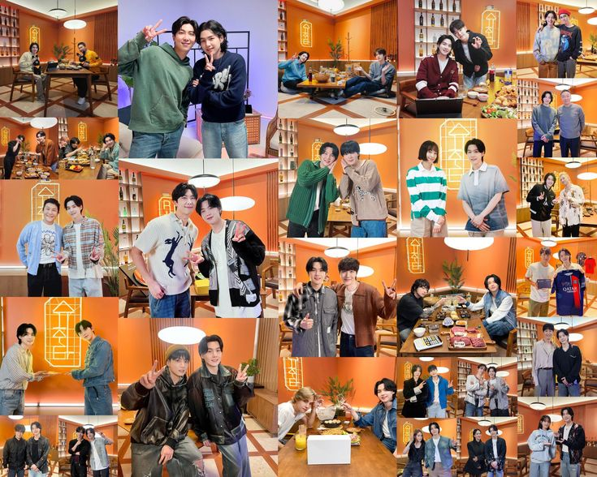

Finally, the wait is over! 2025 is here! BTS is back!
We've waited with love, tears, and strength together. Proves that, we are really strong

How did we survive?
Let’s travel back together and see 💜
grp2.png)
Proof - BTS's First Anthology Album

"Yet to Come" is a heartfelt song from the Proof album. It reflects on BTS's journey so far and conveys a message that the best part of the journey with them is yet to come.
BTS FESTA Dinner 2022

It was truly a bittersweet moment. BTS shared that they were beginning a new journey as solo artists and would take a break from group activities for a while. They also opened up about their thoughts and feelings over the past years.
Jack in the Box - J-Hope's First Solo Album
"Arson" is one of the tracks from Jack in the Box, where we see a different side of our Hobi. Through this song, he exposes the inner conflict between burning ambition and the toll it takes.
J-Hope at Lollapalooza

J-Hope made history as the first South Korean artist to headline the main stage at Lollapalooza 🎤🔥. He lit up the stage with a powerful performance—and we, ARMY, proudly call it "Hobipalooza" 💜🎶🌟.
BTS Vlogs

At the beginning of Chapter 2, we were gifted with the “BTS VLOG†series—one from each member. RM shared his peaceful 'Namjooning' moments at art museums, Jin showed off his cooking skills, SUGA explored woodworking, and J-Hope took us behind the scenes of his Lollapalooza preparations. Jimin crafted bracelets, V went on a serene drive, and Jungkook enjoyed a quiet camping trip. Each vlog was sweet and full of charm—reminding us just how special their individual worlds are 💙.
BTS at TMA
The 2022 TMA was truly unforgettable. After BTS announced their group break to focus on solo activities, seeing all seven of them together on stage again was incredibly emotional for ARMY.
Their performances of “Yet To Come†and “For Youth†touched our hearts deeply — it felt like a warm reminder that their journey as a group wasn’t over. The best is yet to come.
BTS took home 7 awards, including the Daesang (Grand Prize) for the fifth consecutive year! 💥 We were especially proud when Jin received an award, and all our hard work voting on Fan N Star paid off. ARMY truly gave it everything — and BTS made us feel seen and appreciated in return.
This night was a beautiful mix of joy, tears, and pride — a memory that we’ll hold close forever. 💫
Yet to Come in BUSAN
On October 15, 2022, BTS held a monumental free concert, “Yet To Come in BUSAN,†as part of their role as ambassadors for Busan's World Expo 2030 bid. Over 50,000 ARMYs filled the Busan Asiad Main Stadium — though I wasn’t one of them 🙃.
Whatever, I got to watch it online — and it was truly amazing.
Seeing all seven of them on stage together, smiling with tearful joy, was so emotional. The most unforgettable moment? Their RUN BTS performance — it was absolutely powerful ğŸ˜ğŸ”¥.
And then came a surprise from Jin — he announced his upcoming solo single, and softly hinted that he would be the first to enlist for military service. It was a mix of pride, excitement, and tears.
A memory forever etched in ARMY hearts. 💜
The Astronaut – Jin

🌌 Before leaving for his military service, Jin gifted us a beautiful song, "The Astronaut." But this is more than just a song—it's a heartfelt letter to ARMY, filled with his love and gratitude. Every note, every lyric, is a message of comfort and affection. 💜 🶠Jin’s soft, soothing vocals blend perfectly with the dreamy melody, wrapping listeners in a warm hug. The music video, with its touching story, amplifies the song’s emotional depth—it’s a tale of connection, of finding your way back home to those you love. 🚀✨ 💖 "The Astronaut" isn’t just music; it’s a memory, a promise, and a heartfelt farewell before his temporary absence. It’s Jin’s way of saying, "I may be away for a while, but my love for you is always here." ğŸŒ
Jin with Coldplay Live
"The Astronaut LIVE with COLDPLAY."🌌 As "The Astronaut" is an emotional song, we also got to witness its live performance on stage with Coldplay. It was a heartfelt moment for us. Jin stood on stage, smiling with tears in his eyes. The entire fandom cried while watching this unforgettable performance. ğŸ˜
J-Hope at MAMA
🌟 At the 2022 MAMA Awards, J-Hope delivered a breathtaking solo performance that left a lasting impression. Performing "MORE," "Arson," and "Future," his stage was a mix of energy, artistry, and heartfelt emotions. 🶠His powerful and emotional performance stood out, capturing the hearts of all who watched. 💫 🆠BTS dominated the event, taking home six major awards: Artist of the Year, Album of the Year (for Proof), Worldwide Icon of the Year, MAMA Platinum, Best Male Group, and Worldwide Fans' Choice Top 10. 🌏✨ J-Hope, as the attending member, also received two individual awards: Most Popular Male Artist and the Bibigo Culture & Style Award. 🥇 📠A special moment unfolded when J-Hope had a phone conversation with Jin while delivering his speech on stage. It was a sweet, emotional moment.
Jungkook at the FIFA World Cup
Watch ì •êµ (Jung Kook) 'Dreamers' @ FIFA World Cup Qatar 2022 Opening Ceremony on YouTube
🌏✨ The FIFA World Cup — the world's biggest show — brought us the incredible theme song "Dreamers" by Jungkook. 🌟 What makes it even more special is that Jungkook made history by performing live at the opening ceremony of the 2022 FIFA World Cup in Qatar. 🎤🏆 ✨ Dressed in a sparkling black jacket and joined by dancers, Jungkook delivered an electrifying performance. ⚡ He shared the stage with Fahad Al Kubaisi, creating an unforgettable moment that gave everyone goosebumps. 😍🌠 The entire world watched and celebrated. 🌐🎉 🶠The official music video for "Dreamers" is equally breathtaking, featuring Jungkook dancing among flags from around the globe. 🌠It beautifully captures symbolic visuals that highlight Qatar’s rich cultural and natural heritage. 🌺🌴
Indigo / RM

🌌 Indigo by RM — Documentation of his Youth in the moment of the independent phase. 💠This masterpiece is a collection of stories, emotions, and reflections of his twenties. With soulful lyrics and captivating melodies, Indigo became a mirror of his thoughts, raw, and honest. From the serenity of “Wild Flower†🌸 to the vibrant energy of “Still Life,†🶠each track is a piece of his soul shared with the world. Also, we saw a spectrum of his colors — his fears, dreams, wisdom, and warmth. 💙
Jin's Military Enlistment

Jin was the first member of BTS to begin his mandatory military service, and at that time, it was a heart-wrenching moment for ARMYs worldwide. 💔 The members gathered to send him off, their smiles hiding their sadness. Tears glistened in their eyes as they hugged Jin tightly, knowing it would be a long wait until they were all together again. 💧 Yet, amidst the sadness, there was also a sense of pride — Jin’s bravery and unwavering sense of duty. Proud of you, JIN
Suchwita – A Refreshing Show by SUGA 🌟
BTS 8 Special Photofolio

The BTS 8 Photofolio project was a celebration of individuality and creativity. Each member explored a unique concept—from Jungkook's mesmerizing vampire to RM’s rugged biker, and Jimin's ethereal elegance. These photofolios helped us connect with each member’s imagination during their solo journeys.


More Beautiful Moments with BTS
On The Street by J-Hope

A heartfelt send-off song before his enlistment, expressing gratitude and connection with ARMY.
J-Hope's Military Enlistment

With strength and grace, J-Hope stepped into his new chapter while ARMY cheered him on.
Face Album by Jimin

Jimin’s introspective solo debut album touched our hearts with vulnerability and beauty.
D-DAY Album by Agust D (SUGA)

A bold and reflective masterpiece closing the Agust D trilogy with raw emotions and truth.
D-DAY Tour

SUGA's global tour brought intimacy, fire, and catharsis—every stage was a story told with soul.
Take Two – OT7 Song
A gentle promise of “Take Two†as BTS assures ARMY that this is just the beginning.
BTS Festa 2023

Celebrating 10 years of magic, memories, and meaning—the Festa made us cry, smile, and feel connected.
Jack In The Box (Hope Edition)

The re-release of J-Hope’s solo debut with new tracks and live versions gave us fresh energy.
SUGA's Military Enlistment
ARMY sent off our genius producer with pride and prayers for his safety and strength.
Layover Album by V

V’s velvety vocals and vintage vibe brought warmth and longing with every track.
Golden Album by Jungkook

Jungkook’s first full-length solo album sparkled with pop power, charisma, and golden vocals.
Golden On Stage

Jungkook’s live showcase highlighted his commanding stage presence and connection with fans.
Beyond The Story – The Memoir

A beautifully told journey of BTS—from debut struggles to global milestones. A gift for ARMY and history alike.
Beyond The Stage – Documentary

An emotional behind-the-scenes look into BTS’s bond, creativity, and what it means to keep going.
Closer Than This by Jimin

A touching farewell letter to ARMY from Jimin—raw, beautiful, and closer than ever.
Wherever u r by V

V’s soulful promise of presence, even from afar. A warm hug in musical form.
Military Enlistment: RM, V, Jimin, Jungkook

The final four quietly enlisted, showing strength, unity, and love for ARMY. We’ll wait together.
Jin’s Monthly Messages

Jin never let us feel distant. Each month, he left heartfelt messages and updates during his military service, reminding ARMY that he’s doing well and thinking of us. These moments felt like warm letters from him, straight to our hearts.
J-Hope’s Messages

Even in service, Hobi stayed our sunshine. Whether through handwritten letters, Weverse updates, or touching videos, he made sure ARMY knew he was smiling and staying strong. His warmth and thoughtfulness truly comforted us all.
2024
Hope on the Street

A heartfelt return from J-Hope blending music and dance, connecting ARMY once again to his creative soul.
Friends by V

V’s soothing voice and heartfelt lyrics brought warmth to ARMY all over again with "Friends."
Love Wins All – V & IU

A beautiful duet capturing vulnerability and strength—V and IU’s collaboration touched hearts globally.
Right Place Wrong Person – RM

RM returned with profound reflections in this deeply personal and poetic album.
Right People Wrong Place – Documentary

Premiered at Busan Film Festival, this documentary was a raw and powerful window into RM’s journey.
Watch the DocumentaryJimin – "MUSE" (2nd Solo Album)

On July 19, 2024, Jimin released his second solo album "MUSE", following the success of FACE. With this album, he shared his journey to find inspiration and identity through love, vulnerability, and artistry.
"MUSE" features seven tracks, including the pre-release single “Smeraldo Garden Marching Band†feat. Loco, and explores a broader musical spectrum with lush vocals, layered emotions, and Jimin’s trademark elegance.
🧠Listen on SpotifyJin’s Comeback
After months of waiting, Jin returned to ARMY with warmth, grace, and that familiar laughter we missed so much.
Jin’s Hug Event

Jin greeted lucky ARMYs with hugs, smiles, and even tears—it was an emotional reunion that marked a new beginning.
Never Let Go – Jungkook
A gift for FESTA 2024, this emotional track reminded ARMY that the bond never fades.

Jin at the Olympics

Jin represented BTS at the 2024 Paris Olympics, proudly waving the ARMY spirit across the world.
Watch the Moment“Are You Sure†Moment

A funny and iconic fan moment that became a trend across ARMY and BTS!
Run Jin

From military to medals—Run Jin captured his energy and ARMY’s admiration worldwide.
J-Hope Comeback

Hobi returned with fresh inspiration, vibrant energy, and new music that shook the charts once again.
J-Hope at KBO
J-Hope threw the ceremonial first pitch at a KBO game, dazzling the crowd with his energy and charm!
Watch the KBO PitchHappy – Album

An uplifting and nostalgic project for fans, celebrating joy and connection.
Happy on the Stage

A live celebration of the “Happy†album, filled with cheers and love from ARMY.
Watch PerformanceJungkook’s Surprise Military Live
ARMYs were shocked and thrilled when Jungkook appeared live—one of the most precious moments during his service.
Watch the Surprise LiveWinter Ahead – V

A soft, introspective track that wrapped fans in comfort during chilly months.
White Christmas – V

V’s take on the classic carol was nostalgic, magical, and deeply emotional.
Special Comebacks and Moments
LV Bag by J-Hope
J-Hope surprised fans with the song "LV Bag"—a rhythmic and stylish track!
Hobi's 12-Hour Long Live
Hobi stayed live for 12 hours, sharing laughs, stories, and moments ARMY will never forget.
 Watch the Live
Watch the Live
Sweet Dreams MV by J-Hope
"Sweet Dreams" delivered exactly that—ethereal, dreamy vibes paired with J-Hope's signature flow.

Mona Lisa by J-Hope
A timeless track, just like the painting—"Mona Lisa" is J-Hope at his most expressive.

Hope on the Stage
J-Hope brought boundless energy and charisma on stage, turning every moment into a celebration.

Jin's Album "Echo"
Jin returned with his heart-touching solo album "Echo"—a beautiful reflection of his journey.

Run Seokjin Tour
“Run Seokjin†was filled with joy, games, and Jin’s charming presence—just what ARMY needed.

Thank You Message

The End